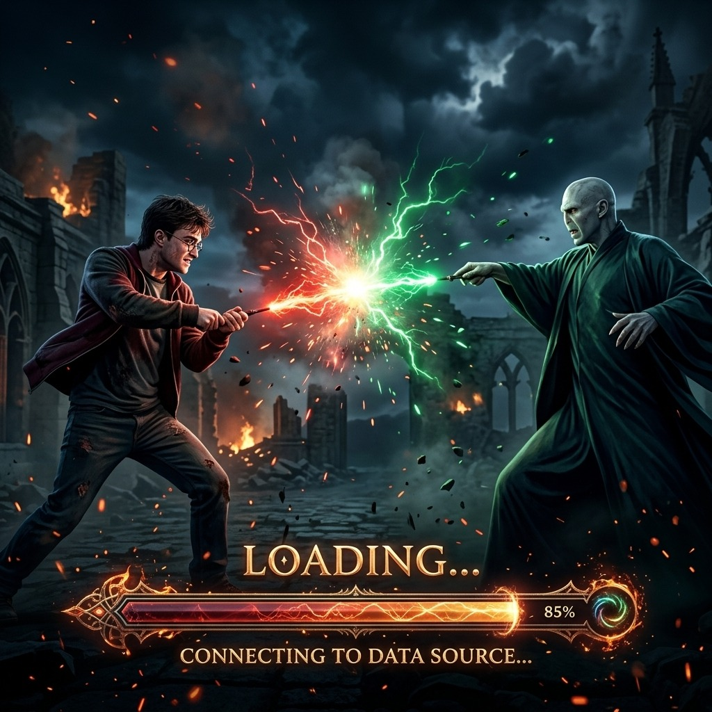

Total Pegawai ASN
0
OrangSeluruh Pegawai

CONNECTING TO DATA SOURCE...
TVRI STASIUN JAMBI
Seluruh Pegawai
Unit Aktif
Pegawai
Pegawai
Pegawai
Data diperbarui: --
| No | Nama Pegawai | TIM KERJA | Jabatan | Status Pengerjaan Eviden SKP | Keterangan |
|---|
Total 0 Pegawai
Geser untuk memutar · arahkan ke irisan untuk detail